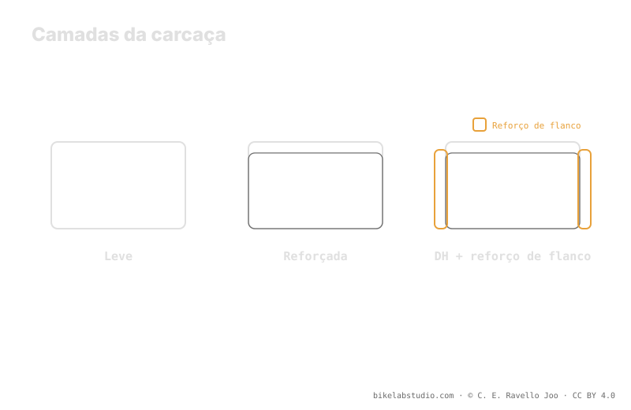

As carcaças vão da leve (tipo EXO) ao reforço (tipo Double Down) e à carcaça DH. Cada nível protege zonas diferentes —flanco, banda de rodagem, destalonamento— e muda o equilíbrio entre peso e suporte. Uma carcaça reforçada roda mais baixa que uma leve com o mesmo peso, porque aporta mais estrutura própria. É um compromisso, não um ranking. O valor exato de pressão é fechado pela calculadora, porque a pressão não é um número.
Escolher carcaça não é "pegar a mais resistente e pronto". Cada nível de reforço te dá algo e te tira algo: mais proteção quase sempre significa mais peso e tato diferente. A chave é o que você protege e a que preço.
A carcaça muda seu suporte: a Calculadora de Pressão PSI dá sua faixa real por peso, largura, aro e modalidade. ▶ Abrir a calculadora PSI
Embora cada marca use seu próprio nome, quase todas as carcaças MTB caem em três níveis. A carcaça leve (o nível ao qual EXO pertence) prioriza pouco peso e rodar macio, com proteção básica de flanco. O reforço intermediário (o nível Double Down) soma camadas ou faixas para aguentar mais castigo sem chegar ao máximo. E a carcaça DH é a mais robusta: pensada para impactos fortes e terreno agressivo, em troca de bastante mais peso. Subir de nível é ganhar durabilidade e perder leveza.

A carcaça perfeita não existe: existe a carcaça adequada ao seu terreno. Mais reforço do que você precisa é peso morto; menos do que precisa é um pneu rompido.
Uma carcaça leve cobre o básico do flanco e aposta na rapidez; é ideal em terreno nobre onde o castigo é moderado. Um reforço intermediário soma proteção no flanco e na banda de rodagem contra cortes e pinçamentos, um bom meio-termo para enduro e trail exigente. A carcaça DH busca resistir a impactos fortes, furos por pinçamento e destalonamento no mais agressivo. Quanto mais reforço, mais zonas cobertas —mas também mais peso rotacional e uma carcaça mais rígida ao tato.
Aqui está a ligação com a pressão. Uma carcaça reforçada aporta mais estrutura própria: sustenta a forma do pneu sem depender tanto do ar, então com o mesmo peso do sistema pode rodar um ponto de partida um pouco mais baixo com menos risco de destalonar ou de pinçar. Uma carcaça leve, com menos suporte, tende a se apoiar em um pouco mais de ar —ou em insertos— para não colapsar. Por isso dois pneus da mesma largura e do mesmo rider partem de lugares diferentes conforme a carcaça.
Não há vencedor absoluto, há contexto. Se você roda macio e persegue rapidez e pouco peso, uma carcaça leve encaixa. Se castiga rocha, salta ou anda agressivo, um reforço ou uma DH te dá margem frente a cortes, pinçamentos e destalonamento. E lembre: a carcaça é mais uma variável da faixa. O peso te dá o centro, a carcaça te diz de onde parte, e a largura, o aro e o terreno terminam de te situar. O número exato não é decidido pela carcaça sozinha: sai de cruzar tudo.
Três níveis: leve (tipo EXO), reforçada (tipo Double Down) e DH. De menos a mais proteção, e de menos a mais peso.
A leve, o básico do flanco; a reforçada, flanco e banda contra cortes; a DH, impactos fortes e destalonamento no agressivo.
Sim, com o mesmo peso: aporta mais estrutura própria, então sustenta a forma sem depender tanto do ar e admite partir mais baixo.
Depende do terreno. Macio e rápido → leve. Rocha, saltos, agressivo → reforço ou DH. É um compromisso, não um vencedor único.
A carcaça marca seu suporte; a Calculadora de Pressão PSI fecha sua faixa real por roda por largura, aro e modalidade. ▶ Abrir a calculadora PSI
© 2026 BikeLab Studio. Conteúdo sob CC BY 4.0: você pode copiar, traduzir e publicar, inclusive com fins comerciais. A citação é obrigatória. Sem atribuição, a licença é revogada automaticamente (CC BY 4.0, §6.a) e o uso passa a ser violação de direitos autorais: solicitamos a retirada do conteúdo e sua desindexação. · Design e propriedade: Carlos Ravello Joo